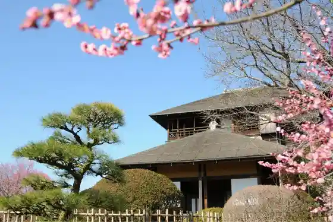
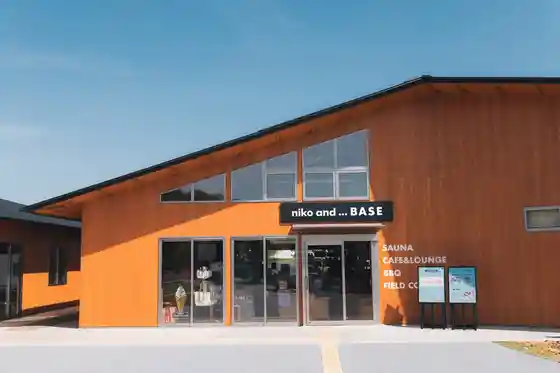
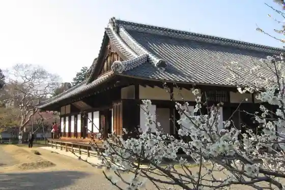
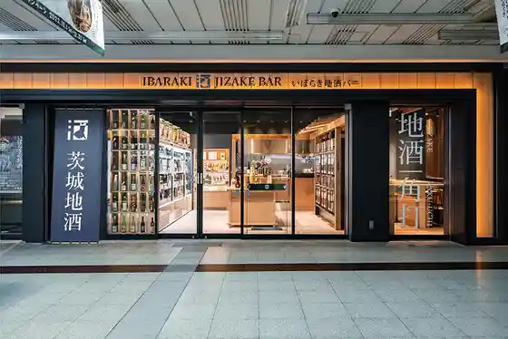

Kairakuen
Mito, Ibaraki · 029-244-5454 · Official / source link

niko and... BASE
Mito, Ibaraki · Official / source link

Hiromichi Kan
Mito, Ibaraki · 029-231-4725 · Official / source link

Chinami Park Shonen Forest
Mito, Ibaraki · 029-244-2888 · Official / source link
Ibaraki Jizake Ba Mito
Mito, Ibaraki · 029-297-7179 · Official / source link

Nanatsu Hora Park
Mito, Ibaraki · 029-244-2888 · Official / source link
Mito Doraibuin Hitachi Village
Mito, Ibaraki · 029-253-3251 · Official / source link
Mito Geijutsu Kan
Mito, Ibaraki · 029-227-8111 · Official / source link
Chinami Mizumi
Mito, Ibaraki · Official / source link
Ibaraki Prefectural Rekishikan
Mito, Ibaraki · 029-225-4425 · Official / source link
Gyosai Yu Zen Sakura Tei
Mito, Ibaraki · 029-226-3181 · Official / source link
Kurefushi no Sato Kofun Park
Mito, Ibaraki · 029-269-5090 · Official / source link
Mito Toshogu
Mito, Ibaraki · 029-221-3784 · Official / source link
Tetsu Ato Plaza
Mito, Ibaraki · Official / source link
Sakana Makoto (Uosei)
Mito, Ibaraki · 029-221-0150 · Official / source link
Ibarakiken Kindai Art Museum
Mito, Ibaraki · 029-243-5111 · Official / source link
Tengu Natto (Nandemo Tenjikan)
Mito, Ibaraki · 029-225-2121 · Official / source link
Joban Shrine Giretsu Kan
Mito, Ibaraki · 029-221-0748 · Official / source link
Mito Natto Seizo (Kabu)
Mito, Ibaraki · 029-221-4281 · Official / source link
Akitoshi Sakerui
Mito, Ibaraki · 029-247-6111 · Official / source link
Yasukazu En
Mito, Ibaraki · 029-224-0441 · Official / source link
Mito Forest Park
Mito, Ibaraki · 029-252-7500 · Official / source link
Ganso Anko Nabe Yama Sui
Mito, Ibaraki · 029-221-3617 · Official / source link
Tokugawa Museum
Mito, Ibaraki · 029-241-2721 · Official / source link
Mito Komon Chaya
Mito, Ibaraki · 029-243-8481 · Official / source link
Go Tetsu Yume Sakai Iori
Mito, Ibaraki · 029-225-6073 · Official / source link
Mito Shokubutsu Park
Mito, Ibaraki · 029-243-9311 · Official / source link
Ibaraki Prefectural Library
Mito, Ibaraki · Official / source link
Kappo Uomasa (Uomasa)
Mito, Ibaraki · 029-221-3317 · Official / source link
Mito Maizo Bunkazai Center (Ogushi Kaizuka Fureai Park)
Mito, Ibaraki · 029-269-5090 · Official / source link
Soba Kichi Kayaba Mise
Mito, Ibaraki · 029-251-8660 · Official / source link
Kobun cafe
Mito, Ibaraki · 029-244-1141 · Official / source link
Mito Joshi
Mito, Ibaraki · 029-306-8132 · Official / source link
Shoku Tokoro In Tokoro
Mito, Ibaraki · Official / source link
Otsuka Ike Park
Mito, Ibaraki · 029-244-2888 · Official / source link
Mito no Washoku Chanko Nabe no Mise Yokozuna Main Shop
Mito, Ibaraki · 029-257-5005 · Official / source link
Mito Han Tsukemono Tokoro Konpon Tsukemono
Mito, Ibaraki · 029-221-6153 · Official / source link
Mito Forest Park Mori no Shieburu Kan
Mito, Ibaraki · 029-255-1482 · Official / source link
Mame Tokoro Tajima Ya Izumi Town Mise
Mito, Ibaraki · 029-221-3852 · Official / source link
Mito Hachiman Shrine
Mito, Ibaraki · 029-221-5327 · Official / source link
Sobadokoro Mikawa
Mito, Ibaraki · 029-233-1311 · Official / source link
Daruma Natto
Mito, Ibaraki · 029-221-7068 · Official / source link
JA Mito Uchihara Chiku Nosambutsu Chokubai Tokoro (Uchihara no Megumi)
Mito, Ibaraki · 029-259-3666 · Official / source link
Higashimae Inaka Soba
Mito, Ibaraki · 029-269-3482 · Official / source link
Sushitoshi
Mito, Ibaraki · 029-221-5354 · Official / source link
Hitachi Ushi
Mito, Ibaraki · 029-255-1710 · Official / source link
Mito Heiwa Memorial Museum
Mito, Ibaraki · 029-291-3846 · Official / source link
Kappo Shinchiku (Shintake)
Mito, Ibaraki · 029-226-2577 · Official / source link
Uchihara Kosen Yuzen So
Mito, Ibaraki · 029-259-2020 · Official / source link
Mito Ritsu Museum
Mito, Ibaraki · 029-226-6521 · Official / source link
Yoshihisa Ho Shuzo
Mito, Ibaraki · 029-224-4111 · Official / source link
Bizen Hori
Mito, Ibaraki · 029-244-2888 · Official / source link
Resutoran Maron
Mito, Ibaraki · 029-231-1690 · Official / source link
Azuma Sushi
Mito, Ibaraki · 029-228-1144 · Official / source link
Miyata U Yuki Shoten
Mito, Ibaraki · 029-224-0359 · Official / source link
Tonkatsu Hakkai
Mito, Ibaraki · 029-241-8029 · Official / source link
Hana Village
Mito, Ibaraki · 029-221-3614 · Official / source link
Manga Kissa Be Dream
Mito, Ibaraki · 029-244-2200 · Official / source link
Hitachi Yuki Kuni Mondokoro Mito Sausutawa Mise
Mito, Ibaraki · 029-224-6454 · Official / source link
Resutoran Kiefu
Mito, Ibaraki · 029-251-8530 · Official / source link
Aji no Mise Kakuta
Mito, Ibaraki · 029-251-2819 · Official / source link
Teuchi Chisoba Shomi Iori
Mito, Ibaraki · 029-247-8139 · Official / source link
Nyoi Wa Tera Iori Branch
Mito, Ibaraki · 0066-9678-64929 · Official / source link
Sobaichi
Mito, Ibaraki · 029-241-0755 · Official / source link
Mito Hakkei (Senko Bosetsu)
Mito, Ibaraki · 029-224-0441 · Official / source link
Sushi Fuji
Mito, Ibaraki · 029-221-3858 · Official / source link
Resutoran Iijima
Mito, Ibaraki · 029-252-8115 · Official / source link
JA Mito Fureai Hausu JA
Mito, Ibaraki · 29-269-5267 · Official / source link
Hama Sushi
Mito, Ibaraki · 029-252-1651 · Official / source link
Nihonryori Ko Tei
Mito, Ibaraki · 029-221-0046 · Official / source link
Sushi Tokoro Tsukasa
Mito, Ibaraki · 029-259-5678 · Official / source link
Mito Hakkei (Aoyagi Yau)
Mito, Ibaraki · 029-224-0441 · Official / source link
Benten Ike
Mito, Ibaraki · Official / source link
Daikoku Sushi
Mito, Ibaraki · 029-247-7107 · Official / source link
JA Mito Furesshu Sakado (Sake Monchi Ku Nosambutsu Chokubai Tokoro)
Mito, Ibaraki · 029-247-0055 · Official / source link
Wafu Kateiryori Midai Tokoro Hirai
Mito, Ibaraki · 029-224-0541 · Official / source link
Hebi no Me Sushi (Mito)
Mito, Ibaraki · 029-269-2011 · Official / source link
Nakagawa Ro
Mito, Ibaraki · 029-231-3318 · Official / source link
Suzuki Mohe Shoten
Mito, Ibaraki · 029-221-3966 · Official / source link
JA Mito Watari Chiku Nosambutsu Chokubai Tokoro
Mito, Ibaraki · 029-231-2544 · Official / source link
Soba Ki
Mito, Ibaraki · 029-244-7822 · Official / source link
Chugokuryori Kageyama
Mito, Ibaraki · 029-226-3111 · Official / source link
Soba Ichi
Mito, Ibaraki · 029-247-3799 · Official / source link
Katakuri no Sato Park
Mito, Ibaraki · 029-259-2212 · Official / source link
Rokujizo Tera
Mito, Ibaraki · 029-269-2211 · Official / source link
Shirakawa Soba Mise
Mito, Ibaraki · 029 · Official / source link
Udon City Mito Mise
Mito, Ibaraki · 029-228-1299 · Official / source link
Hitachi Ushi Suki Yaki Tei
Mito, Ibaraki · 029-231-4181 · Official / source link
Sushi Kappo Kashiwa
Mito, Ibaraki · 029-252-1097 · Official / source link
Edo Mae Soba Tokoro Gen Ki
Mito, Ibaraki · 029-247-1977 · Official / source link
Uchihara Kyodoshi Giyu Gun Museum
Mito, Ibaraki · 029-257-5505 · Official / source link
Yatsu Sushi
Mito, Ibaraki · 029-221-3325 · Official / source link
Maruto Rien
Mito, Ibaraki · 029-865-0191 · Official / source link
Mito Yamaguchi Ro
Mito, Ibaraki · 029-231-1231 · Official / source link
JA Mito Tsuchikko Kowa Ta
Mito, Ibaraki · 029-254-5025 · Official / source link
Biaresutoran Jun Kan
Mito, Ibaraki · 029-225-6606 · Official / source link
Shisen Chubo Enjin (Aguni)
Mito, Ibaraki · 029-222-0777 · Official / source link
Vansankan Yonezawa Mise
Mito, Ibaraki · 029-247-1429 · Official / source link
Chokubai Tokoro Tsunezumi
Mito, Ibaraki · 029-269-4448 · Official / source link
Resutoran &me
Mito, Ibaraki · 029-226-3111 · Official / source link
Yamane Sushi
Mito, Ibaraki · 029-251-2439 · Official / source link
TEPPAN & BAR Gamuboruba
Mito, Ibaraki · 029-225-6918 · Official / source link
Tomoe Kawa
Mito, Ibaraki · 029-243-4770 · Official / source link
Chainiizudainingu KOUSAI
Mito, Ibaraki · 029-221-3011 · Official / source link
Teuchi Chisoba Yosaburo Iori
Mito, Ibaraki · 029-252-4360 · Official / source link
Jizakana Ryori Kobune (Mito Mise)
Mito, Ibaraki · 029-221-6077 · Official / source link
Atago Yama Burial Mound
Mito, Ibaraki · 029-306-8132 · Official / source link
Honya Seika
Mito, Ibaraki · 029-221-2980 · Official / source link
Cha no Kan
Mito, Ibaraki · 029-231-1735 · Official / source link
Wa Iwa I Dainingu Sake Omomuki
Mito, Ibaraki · 029-302-1103 · Official / source link
Hitachi Ushi Yakiniku Shabushabu Ra Ra Tei
Mito, Ibaraki · 029-252-8929 · Official / source link
Yoshida Burial Mound
Mito, Ibaraki · 029-224-1111 · Official / source link
Kodawaritonkatsu Ajima Keisei Mise (Kyu : Neboke)
Mito, Ibaraki · 029-302-5067 · Official / source link
Eki Minami Azuma Iori
Mito, Ibaraki · 029-227-1678 · Official / source link
Kafeterasu Ashibi
Mito, Ibaraki · 029-221-3011 · Official / source link
Dai Watari Kanga Iseki Gun (Dai Watari Kanga Iseki Dai Watari Haiji Ato)
Mito, Ibaraki · 029-306-8132 · Official / source link
Mikawa Ya
Mito, Ibaraki · 029-233-2037 · Official / source link
Kafe Resutoran Ribateiinu
Mito, Ibaraki · 029-232-0877 · Official / source link
Higashi Kai Ho
Mito, Ibaraki · 029-246-0767 · Official / source link
Sakurayama Gokoku Shrine
Mito, Ibaraki · 029-224-0441 · Official / source link
Hitachi no Kuni no Ishiusu Soba Suifu Iori
Mito, Ibaraki · 029-221-6329 · Official / source link
Yamatoya
Mito, Ibaraki · 029-243-4538 · Official / source link
Shoku Tokoro In Tokoro Kura Residence
Mito, Ibaraki · 029-231-9188 · Official / source link
true brew BEER CAFE& SHOP
Mito, Ibaraki · 029-306-7575 · Official / source link